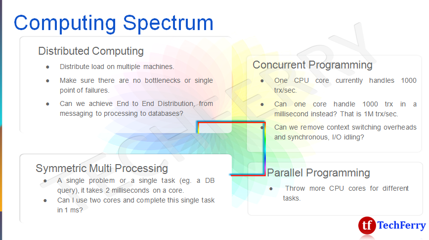
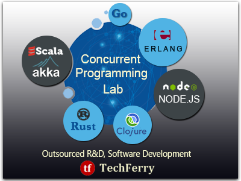
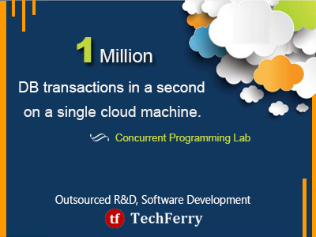
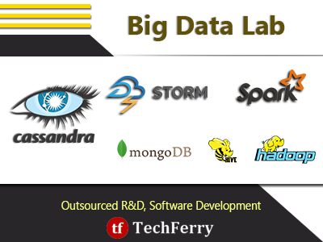

Massively Scalable ApplicationsScaling Applications is different from Massively Scaling Applications. Over the past few years, TechFerry has helped many companies scale their web based products and applications, be it high concurrency, high volume or high velocity - ranging from massive RDBMS to Big Data. This article is our attempt to pen down our experience in application scalability in general, with a focus on Massively Scalable Applications. We will cover the following topics in this article:
Scalable vs Massively ScalableScalability is ability of a system, network, or process to handle a growing amount of work in a capable manner or its ability to be enlarged to accommodate that growth. Scalability in the context of web based applications, has been to deal with tens or hundreds of thousands of simultaneous requests, performing thousands of concurrent tasks or transactions.
Massively Scalable Applications, on the other hand, are highly concurrent (millions of transactions in a second), are capable of handling twitter kind of load (millions of tweets pouring in every second). To quantify, any system that scales beyond 1 Million transactions per second is Massively Scalable.
Benchmark: 1 Million TRX per second
1 Million/sec
= 1 Billion TRX in 17 minutes
= 86.4 Billion TRX a day Scale out or Scale up?To achieve, such a level of massive scalability, we have two choices. Scale out (Horizontal Scaling) or scale up (Vertical Scaling).Scale out Add more machines to the cluster. Let us assume that for a particular application, 1 CPU core serves upto 1000 requests per second.
1 CPU Core = 1000 requests/sec
Good idea or stupid idea? What about the costs?To massively scale (1 Million request/second), we need 1000 cores. 50 machines 20 cores each. Scale up Scale each machine to take on more load.
Can one machine scale to a million transactions per second?
What is the bottleneck then? The Answer is YES. Our commodity hardware is very powerful. What do we do to save tons of money being wasted in scaling out? Computing SpectrumLet us review the computing spectrum to understand different archtectural approaches people are taking to architect massively scalable applications. Distributed Computing
Concurrent Programming
Parallel Programming
Symmetric Multi Processing
 Distributed ComputingDistribute workload between two or more computing devices or machines connected by some type of network. For example, clustered architecture with multiple machines.
However, in real life web applications, we need to distribute workload on
End to End Distributed ComputingThe challenge in distributed computing for web applications is to achieve end to end distribution that includes Distributed Storage, Distributed Messaging, and Distributed Analytics (Real Time and Batch).  Traditional vs New ApproachSpot the Bottleneck node / single point of failure in Traditional vs New approach to distributed computing.Traditional: Load Balancer (L), Master DB (M) | New: ?? Distributed Computing - ToolsDistributed MessagingApache Kafka, RabbitMQ, Apache ActiveMQA detailed comparison from Linked on these distribued technologies can be found in [1] Distributed AnalyticsApache Storm (Real Time), Apache Spark (Batch)Distributed StorageCassandraDistributed Computing - Use CasesA couple use cases for end to end distributed computing.
Concurrent ProgrammingConcurrent Programming is a form of computing in which several computations are executing during overlapping time periods - concurrently - instead of sequentially.Software code that facilitates the performance of multiple computing tasks at the same time. Architectural Concepts
Events vs Threads, Actors
TechFerry Innovation Labs conducted an independent study of performance comparison of multi-threaded synchronous technology using Spring/Hibernate,
vs event based, single process, asynchronous technology using NodeJS.
The report is available at NodeJS vs J2EE - A performance comparison study. Asynchronous Programming
Functional ProgrammingA programming paradigm, a style of building the structure and elements of computer programs, that treats computation as the evaluation of mathematical functions and avoids changing-state and mutable data.
Symmetric Multi ProcessingSymmetric Multi Processing (SMP) is the processing of programs by multiple processors that share a common operating system and memory.
Asymmetric vs SymmetricAsymmetric Multiprocessing
Symmetric Multi Processing (SMP)
Innovation Labs @ TechFerryAt TechFerry Innovation Labs, we are conducting cutting edge research on building massively scalable applications. Areas covered include concurrent programming, end to end distributed computing and asynchronous programming, symmetric multi-processing, and Big Data. We have scaled one single cloud machine to process up to 1 Million DB transactions in a second.   References
|